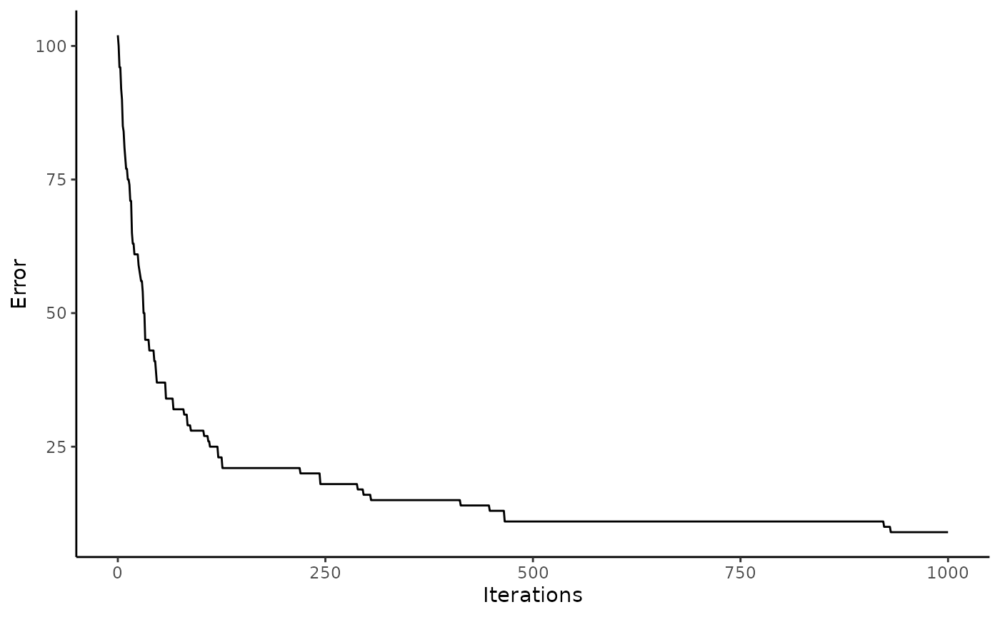

Getting started with spectre
C.E. Simpkins, S. Hanss, M. Hesselbarth, M.C. Spangenberg, J. Salecker and K. Wiegand
2021-10-01
Source:vignettes/getting_started_with_spectre.Rmd
getting_started_with_spectre.RmdGeneral background
spectre is an R package which easily implements an advanced optimization algorithm capable of predicting regional community composition at fine spatial resolutions using only sparse biological and environmental data. The algorithm underlying spectre utilizes estimates of \(\alpha\)-diversity (i.e. species richness) and \(\beta\)-diversity (i.e. species dissimilarity) to come up with community composition estimates for all patches within a target region. The method used in spectre is an adapted version of that presented by Mokany et al. (2011).
Installation
Install the release version from CRAN:
install.packages("spectre")To install the developmental version of spectre, use:
install.packages("devtools")
devtools::install_github("r-spatialecology/spectre")Use case example
This example acts as a minimal working case and uses simple “simulated” data matching the structure of that needed by the relevant functions. This simple example is used to minimize the time and data storage requirements needed to run this vignette.
Generating input data
The first step in using the spectre package is to gather estimates for \(\alpha\)-biodiversity and \(\beta\)-biodiversity (in the form of Bray-Curtis dissimilarity) for the area of interest at the desired outcome resolution.
For this example, we created a random species composition (15 sites, gamma diversity = 20) and calculated i) an \(\alpha\)-diversity estimate and ii) a Bray-Curtis dissimilarity estimate in the output format of the gdm package (Fitzpatrick et al. 2021). Both are used as input for the spectre algorithm, please see R/generate_minimal_example_data.R for details.
# load "observed" alpha-, beta- and gamma-diversity values of the random species composition
alpha_list <- minimal_example_data$alpha_list # richness
beta_list <- minimal_example_data$beta_list # Bray-Curtis dissimilarity
total_gamma <- dim(minimal_example_data$species_list)[1] # 20 speciesRunning the optimization
We use the input estimates (\(\alpha\)-diversity and Bray-Curtis dissimilarity) to generate a commonness matrix (i.e. species in common between each site by site pair) using the generate_commonness_matrix_from_gdm() function. This commonness matrix acts as the objective function (i.e. target) for the optimization algorithm.
# Calculate objective_matrix from (modelled) alpha-diversity and Bray-Curtis dissimilarity
objective_matrix <- spectre::generate_commonness_matrix_from_gdm(
gdm_predictions = beta_list,
alpha_list = alpha_list)Once the input estimates and objective function have been obtained the optimization algorithm is straightforward in spectre, requiring only one function call. Note though that the run time for this function may be high especially for large landscapes with high species diversity and if max_iterations is high.
res <- spectre::run_optimization_min_conf(
alpha_list = alpha_list,
total_gamma = total_gamma,
target = objective_matrix,
max_iterations = 1000) # n iterations
#>
#> > Optimization finished with lowest absolute error = 7 (highest absolute error was: 111 improved by: 104)Result analysis
spectre incorporates functions to allow for easy calculation of certain error metrics, namely the mean absolute commonness error (\(MAE_c\)) and the relative commonness error (\(\% RCE\)). \(MAE_c\) is the mean of the absolute difference between the solved solution matrix and the objective function, whereas \(\% RCE\) is the \(MAE_c\) over the absolute commonness from the objective function represented as a percentage.
error_c <- spectre::calc_commonness_error(x = res, objective_matrix = objective_matrix)The objective function had a mean commonness of 1.75. The mean absolute error between the objective function and the solved solution matrix was 0.07. The solution matrix had an relative commonness error (RCE) of 3.8%.
These results can be visualized in two ways using functions built into the package. First, one can plot the error of the solved solution matrix over time. Second, the commonness error between the final solved solution matrix and the objective function for each patch can be plotted
# With an increasing number of iterations, the solution matrix improved
spectre::plot_error(x = res)
# Plot commonness error between objective function and solution matrix
spectre::plot_commonness(x = res, target = objective_matrix)
References
Fitzpatrick, M.C., Mokany, K., Manion, G., Lisk, M., Ferrier, S., Nieto-Lugilde, D., 2021. gdm: Generalized Dissimilarity Modeling. R package version 1.4.2.2. https://CRAN.R-project.org/package=gdm
Mokany, K., Harwood, T.D., Overton, J.M.C., Barker, G.M., Ferrier, S., 2011. Combining α - and β -diversity models to fill gaps in our knowledge of biodiversity: Filling gaps in biodiversity knowledge. Ecology Letters 14, 1043–1051. https://doi.org/10.1111/j.1461-0248.2011.01675.x